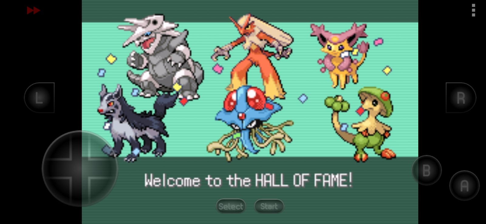
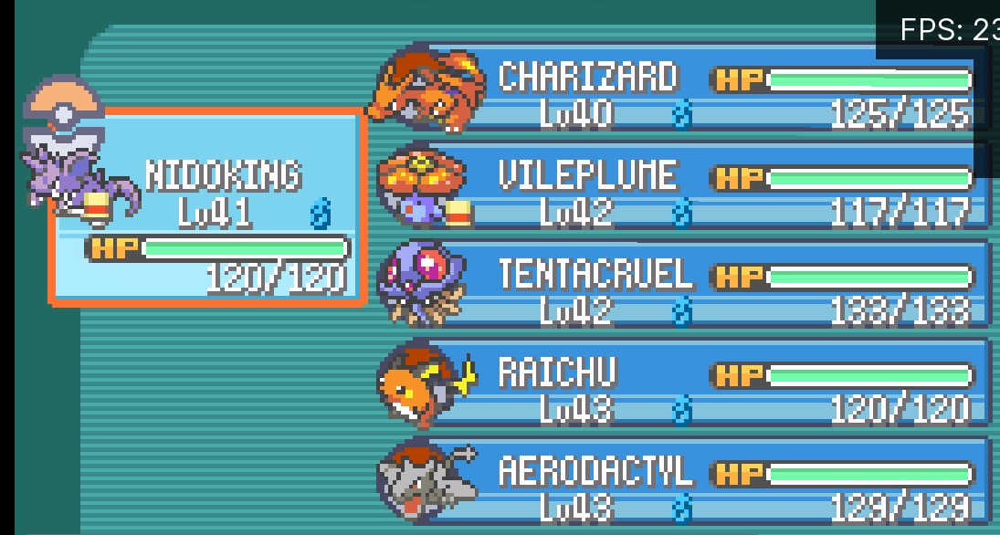
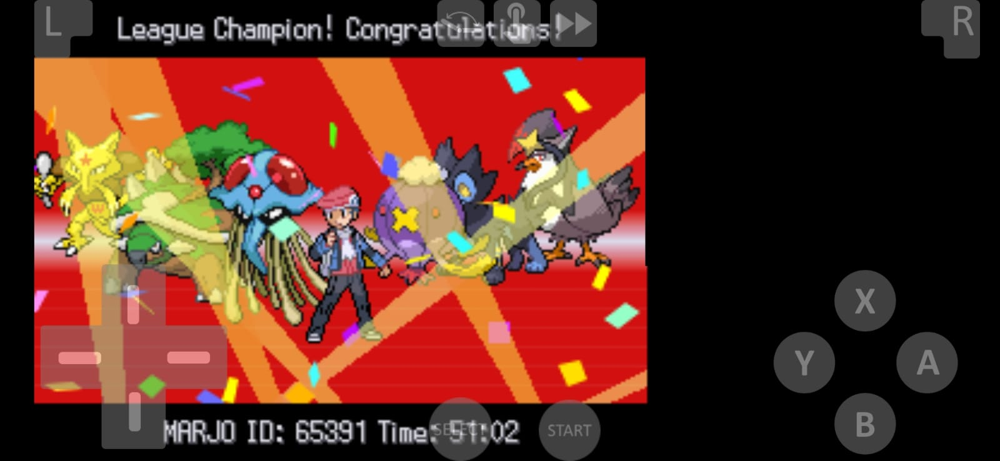
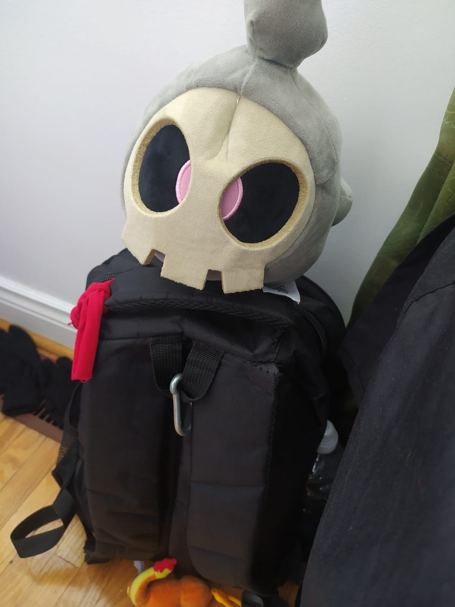

My first Pokémon games

Pokémon Emerald
Ironically the first Pokémon game I played was a third generation game and it was Pokémon Emerald.
I played it on a gameboy emulator on my cell phone called “MyGBA”, and it is, without a doubt my favorite
Pokémon game. I've played it at least 5 times, although I'll always remember the first time I played it,
I've always liked Pokémon and the third generation introduced interesting mechanics for the time, such as
natures, abilities and so on.

Pokémon Fire Red
My second Pokémon game to which I also put many hours was Pokémon Fire Red, the second
generation remake of one of the first Pokémon games (Red). This was also in an emulator,
which is called RetroArch and in this case in my laptop, since I don't have any GameBoy Advance.
I still had a lot of fun with this game, besides playing it with my favorite pokemon of the
first generation.

Pokémon Platinum
The third Pokémon game I played was Pokemon Platinum, a fourth generation game, and the
truth is that I would say it's my favorite Pokémon game, but Pokémon Emerald I've played for
longer and I've grown more fond of it, although being a third generation game it doesn't have
separation of moves with its types, not like in the fourth generation games, which have special
and physical type moves, regardless of the type. I also captured Giratina and Dialga, and two of
the three legendaries of the lake. It also has my favorite initial (Torterra), and the trio of favorite
initials, plus there is also Drifblim, one of my favorite Pokémon.

Conclusion
I've always liked Pokémon, I have a lot of Pokémon cards, some of them worth more than 15 CAD,
plus several stuffed animals, including my Duskull plush (the Pokémon in the picture) which is one
of my favorites, plus I also have a Magikarp plush, a Charmeleon plush and a Pikachu keychain.
I've always liked Pokémon, and even though I haven't bought any game so far, I've always liked its
games, its mechanics, its community and even the anime. I have also played Pokémon MMO, and
Pokémon Showdonw, a game 100% focused on competitive.